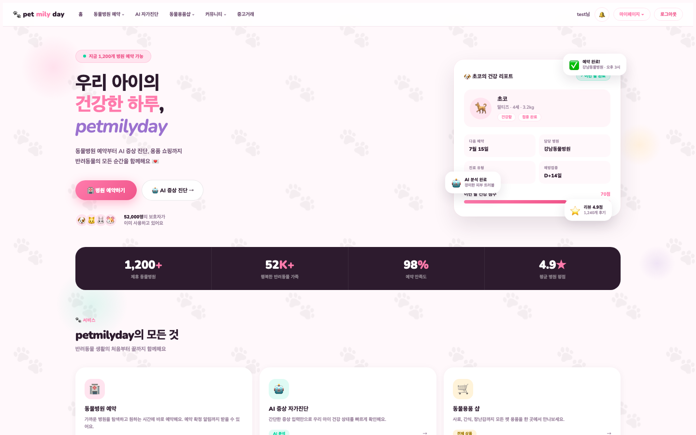
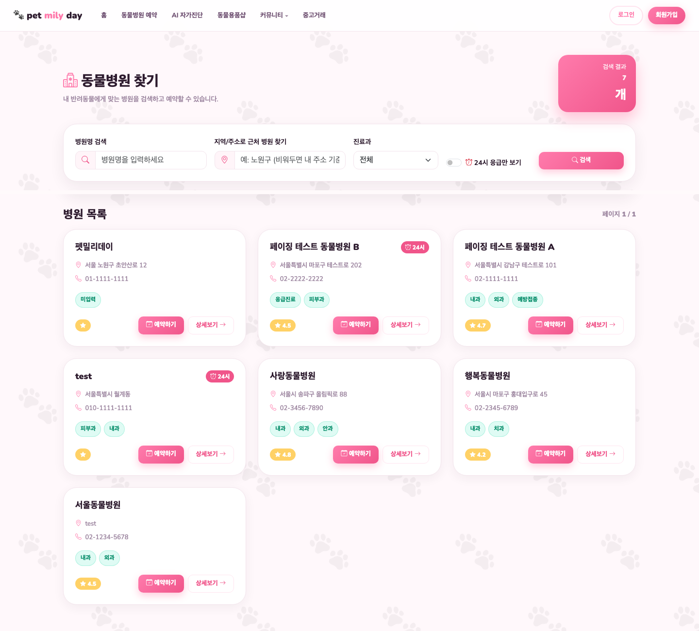
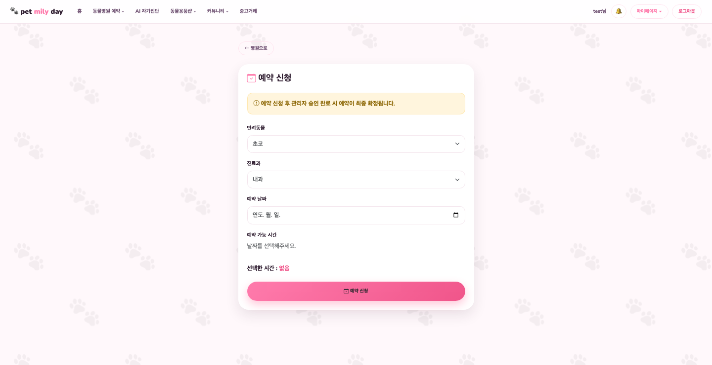
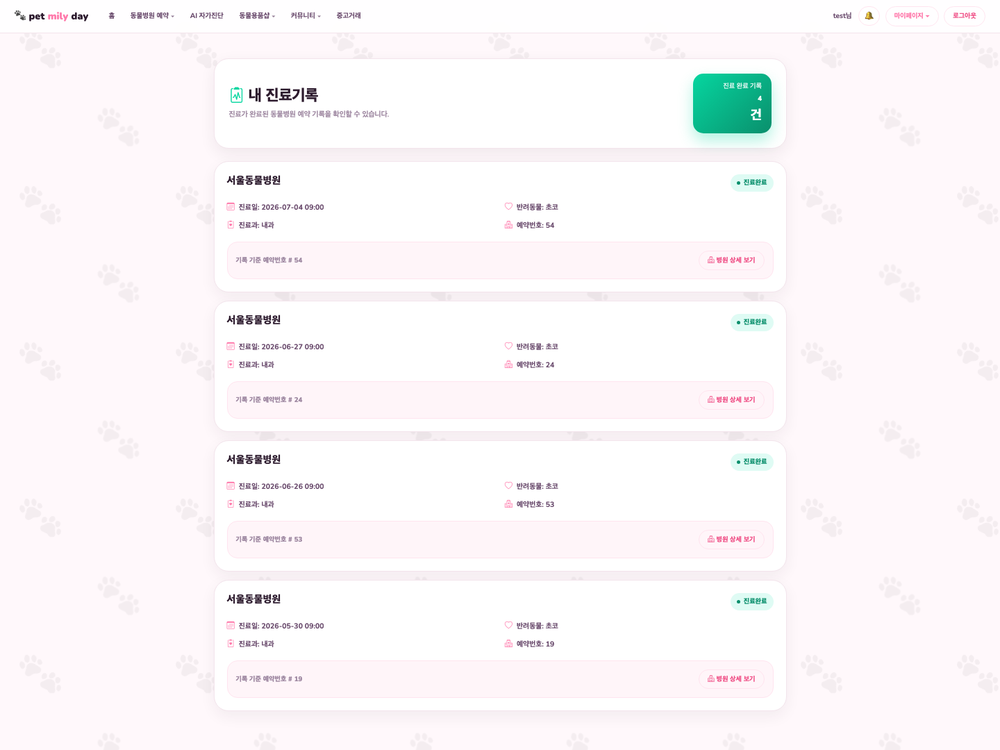
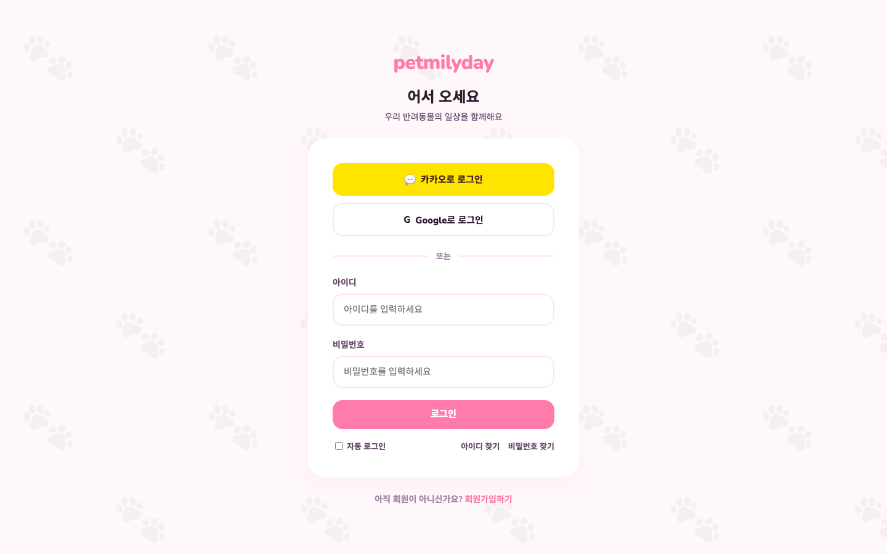
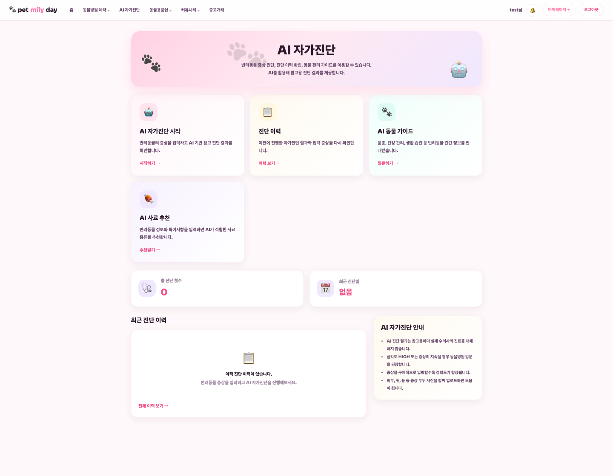
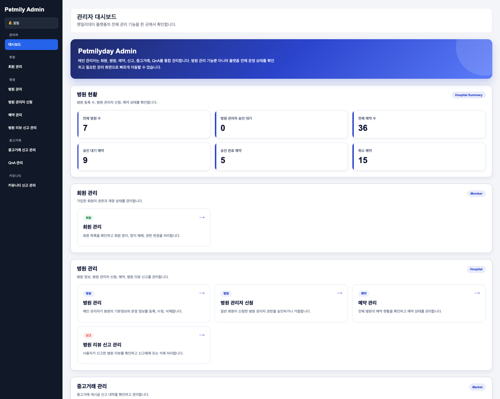

동물병원 예약·진료기록 관리부터 반려용품 쇼핑몰, 중고거래, 커뮤니티, AI 자가진단까지 하나의 서비스에서 제공하는 반려동물 통합 케어 플랫폼입니다. Spring Boot 기반 모놀리식 웹 애플리케이션으로, 계층형 아키텍처로 관심사를 분리하고 서비스는 인터페이스와 구현체를 나누어 결합도를 낮췄습니다.
저는 동물병원 및 예약 도메인을 중심으로 인증·알림·AI 연동 등 서비스 전반의 공통 기능을 담당했습니다.







| Language / Runtime | Java 21 |
| Framework | Spring Boot 3.5.14 (Web MVC, Data JPA, Validation) |
| Persistence | Spring Data JPA, QueryDSL, MariaDB, HikariCP |
| View | Thymeleaf, Spring Security 6 연동 |
| Auth | Spring Security, OAuth2 Client(Google·Kakao), JWT |
| Realtime | WebSocket(1:1 채팅), SSE(실시간 알림) |
| External | AWS S3, Kakao Map/지오코딩, KakaoPay, Anthropic Claude(Spring AI) |
| Build | Gradle |
BooleanExpression으로 조합해 null 조건은 자동 무시되는 동적 검색 구현@Lock(PESSIMISTIC_WRITE) 비관적 락 적용 — 등록 시 병원 엔티티를 락으로 조회(findByIdForUpdate)해 동시 요청 경합에서 정합성 보장role 커스텀 클레임, 30분 만료)OAuth2SuccessHandler 구현SseEmitter 기반 실시간 알림 구현ConcurrentHashMap + CopyOnWriteArrayList로 관리해 동시성 안전 확보| Leeuswa (본인) | 동물병원·예약·진료기록, 인증(JWT/OAuth2), SSE 알림, 카카오맵, AI 사료추천, 관리자 |
| endy | 회원가입/로그인, 커뮤니티 게시판, 댓글·좋아요, 반려동물 프로필, 신고 |
| n1mppp | 쇼핑몰(상품·장바구니·주문·정기구독·리뷰·QnA·위시리스트), KakaoPay 결제 |
| jungwonseok | 중고거래(게시글·1:1 채팅), KakaoPay, AI 자가진단·가이드 |